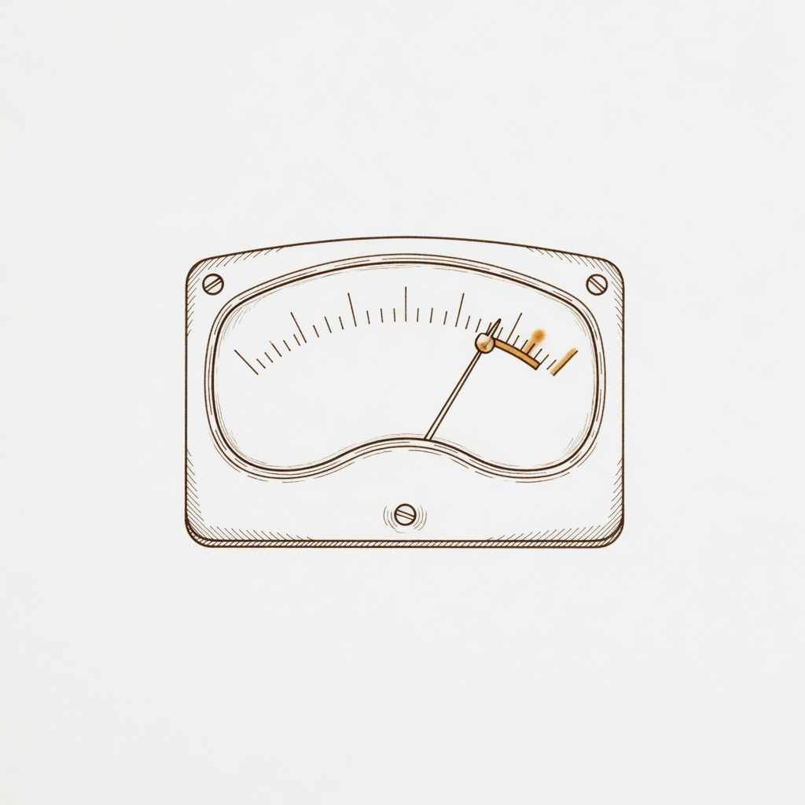

The Woodshed · Progress
Progress Dashboard
Your practice numbers and skill ratings at a glance.
Couldn't auto-load the data file (this happens when you open the page directly via file://). Load it manually:
Load progress-data.json